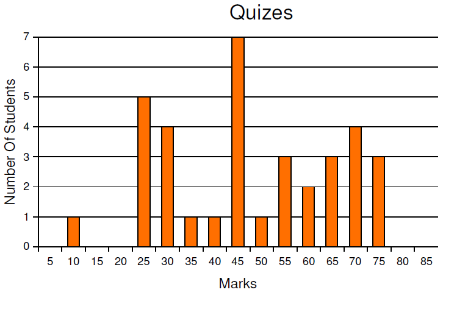
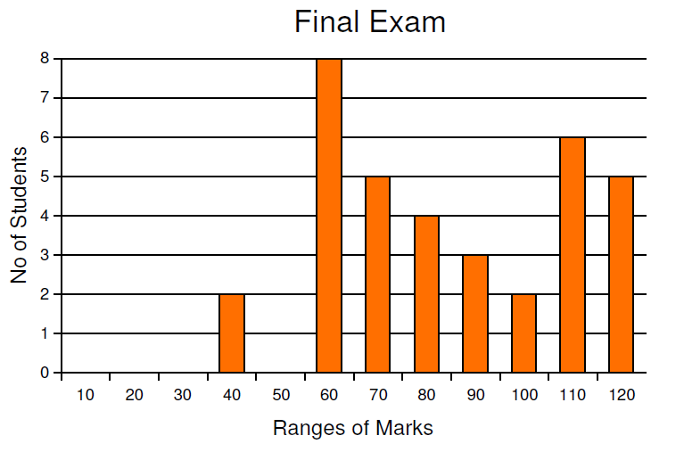
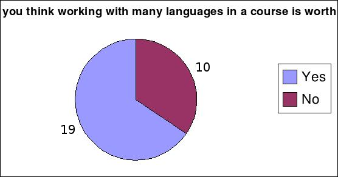
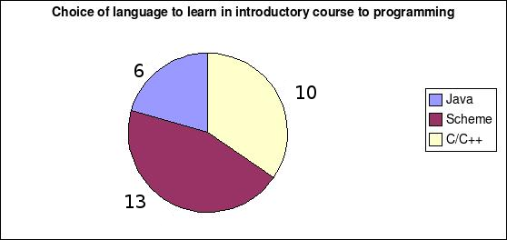

This is a report on the ITM-121 Principles of Programming course that was conducted during the semester AY 2006-2007/Sem-1 at IIITM-K. The goal of this report is to describe how the course was conducted and its impact on students. The report also identifies how the course can be improved upon when taught in future.
Principles of Programming, was being offered to the students for the first time in the institute. The course set itself a bold agenda: to impart the fundamentals of programming and software to students, not in isolation, but by applying them to the latest web technology frameworks. This applicative approach was the result of Dr. T B Dinesh working closely with the Principal Instructor in designing the syllabus, and the lab exercises for the course, which included designing a web 2.0 spreadsheet application.
The course had 2 lectures a week and one tutorial, with a two hour lab session each week. The lab sessions were mostly self-learning in nature, and students spent much of their time during the lab working lab assignments. All the classes were taken by the principal instructor.
The final grade was divided between a midterm, a final, and quizzes. Homework assignments were assigned but not graded.
The classes (lectures and tutorials and labs) were well attended. More than 80% of the students attended 80% of the classes.
Student performance in the midterm exam was disappointing. We feel that part of this was because the students did not know "what to expect in the exam". All problems in the exam were "fill in the blanks" type, where the students had to read program code rather than write.

To remedy the situation and to get more continuous feedback about student performance, we decided to introduce weekly quizzes after the midterm. This turned out to be a good idea, and students responded well, with improved performance.
Students mostly did well on the final exam. To be sure, the exam was easy, but some of the credit for the good performance clearly belongs to the students.
We decided against grading homework assignments because of the difficulty in controlling plagiarism and copying. Instead we based some of the quizzes on the lab assignments.
We conducted a survey when the course was about three fourths through to obtain feedback and some validation about our approach in the course.
This course employed two languages, Scheme and Javascript, for teaching the Principles of Programming. Neither of these languages were formally taught. The idea of using two languages: one for the lectures another for the lab was driven both by pedagogical and technological considerations. While Scheme seems perfect for introducing programming pedagogy, Javascript is specially suited for building web applications in today's Web 2.0 technological scenario. Both languages are different in syntax but are closer semantically. Hence the choice provided an excellent platform to compare computational concepts across the two languages. The students seemed to agree with these ideas, almost two to one.
Our course used Scheme for the lecture materials. The students appreciated the economy of expression in Scheme and also its structure which made all computational ideas clear and transparent. They agreed, again 2-to-1, that given a choice, they would have liked to have their introductory programming course based on Scheme.
Oral Feedback: This response in the survery corroborated oral feedback from the students garnered during casual, break room conversations several weeks before the survey was taken. Students were greatly appreciative of the impact the course was making in their understanding of programming in general. Some wondered why this course was not taught in their first semester, instead of the Object Oriented Programming in Java course. This opinion is also shared by at least two of the associate instructors,Shabeer and SivChand.
Electronic Course Evaluation: Student evaluation indicated a moderately high level of satisfaction. Answers to all questions were rated greater than 4 out of the maximum 5. Evaluation of the Principal Instructor rated at higher than 4.5 for all the questions.
The main criticism from the students was that Javascript programming was inadequately covered in the labs. According to the students, more time and effort should have been spent teaching the basics of Javascript and its libraries.
This course made use of the latest technologies for teaching and sharing content. The goal, from the beginning, was to build the course in a completely open manner that made it possible for everyone on the internet to share and contribute to the course.
The course was hosted not on an moodle site internal to IIITM-K, but on an gloabally accessible wiki.
Keeping in view the open nature of the course, the default newsgroup of the course was a world-accessible google newsgroup popjs-2007-iiitmk_AT_googlegroups.com.
Moodle was used by students at IIITM-K for specific, local purposes like submitting homework assignments.
Like last semester, the instructors maintained specific weekly hours for face-to-face meetings with students in their offices. Some students made very good use of this facility, although it would have been better if more did.
All students were required to use SVN for doing their homeworks. The students' work was version controlled and backed up thanks to the svn server and the backup server it was tied to.
In addition, all the instructors and co-instructors, along with Dr. Dinesh from Bangalore, relied heavily on SVN and the Wiki to develop code, exams and other instructional material. We strongly recommend that other course instructors and staff at the institute adopt SVN for their own work. There is also a great opportunity here for streamlining office documentation and paper work through its use. There are already enough of us who can teach SVN and its benefits to all at the institute, so training in the use of this other productivity tools should not be a problem.
We relied XML Schema and Style Sheet developed earlier by Siv Chand to set the quizzes in XML.
Although we emphasized from the beginning the participatory nature of this course, students were diffident when interacting in the classroom or on the news group. Next semester, I plan to increase the weight of class participation substantially, and encourage other instructors to do the same.
Students were much more articulate in writing their opinions in the in-class survey. The instructors were impressed with the insightful opinions that some of the students had regarding the course.
At least one student observed, and we agree, that the chairs in the class were designed hold paper notebooks but not notebook computers. This prevented students from using their notebook computers in class to work alongside the instructor on programming material discussed in the class.
The institute should consider buying furniture that allows the ergonimic use of notebook computers in classrooms. This issue should be considered when furnishing the new classrooms coming up in Nila in the next few months and refurnish the existing classrooms in Park Centre.
We like to think of this course as laying the foundation for software systems and engineering. Therefore, this course should be linked closely with other courses like data structures, discrete mathematics, embedded systems, web technologies and databases.
This is the first time the Principles of Programming was offered at the institute. Most students realized and appreciated the foundational impact of this course.
The wiki approach was a definite success, with the content being populated by several sources, including some students.
We feel that the Principles course should form the nucleus of an integrated Foundations of Software Engineering stream offered to post-graduate students. To be truly integrated, the course's syllabus and assignments will have to be closely linked with those in other foundational courses like discrete maths, data structures, and databases.